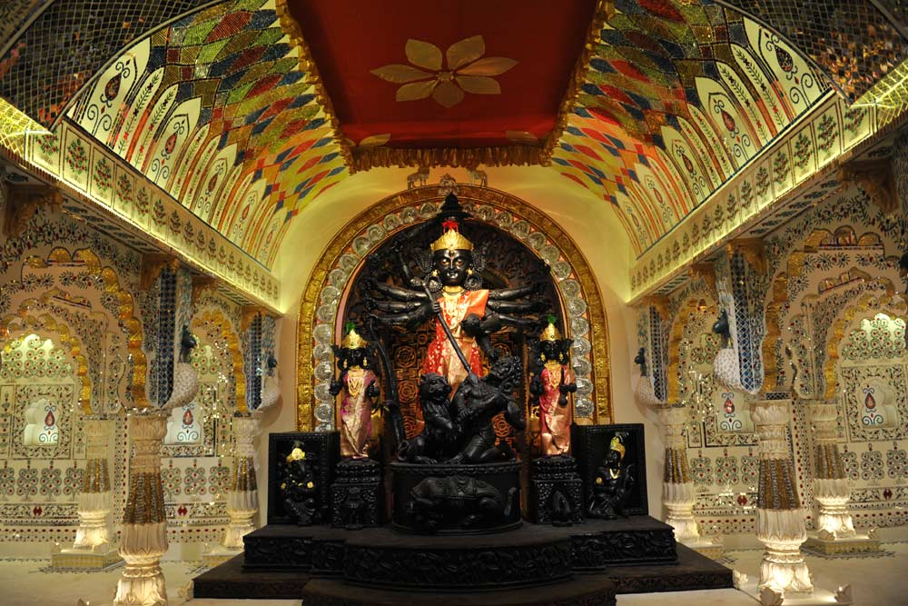
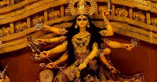
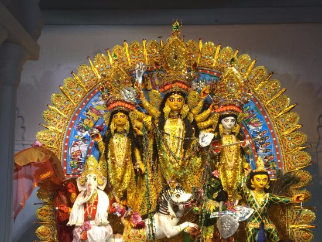

Durga Puja is the most celebrated festival in West Bengal.
Every year it is celebrated with a great procession.But this year due to the pandemic situation it was not that but we celebrated it with maintaining all the safety precautions.
| Name of the puja | Location | Photo | Link |
|---|---|---|---|
| Chetla Ogroni | Chetla Park |  | to know more Click here |
| Shreevumi Sportings | Ultadanga |  | to know more Click here |
| Shovabazar Rajbari | Shovabazar |  | to know more Click here |
Kumari Puja is one of the most beutiful events of Durga Puja. It is mainly held in the Raj bari or the Asrams.
But this year due to this pandemic situation many club or Puja comittees did not arrange this event.